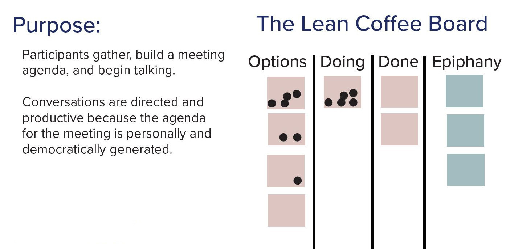

Reveal What Matters
1. The Opportunity
As a leader of a large organization, you know that strategies coming from team members themselves are more likely to be embraced . How do you encourage team members to come up with successful strategies?
2. The Solution
Encourage the team to set up an one hour meeting with no managers to discuss the most important topics. The outcome of the meeting is a list of insights and action items.
3. How?
Ask a team member to volunteer to facilitate the meeting by using the Lean Coffee technique. Ask the facilitator to invite all non-managers in the organization (as optional) to the meeting and ask them to present you the insights/action items from the meeting without revealing who said what. You want to focus on the ideas that came out of the meeting and not on the individuals.
